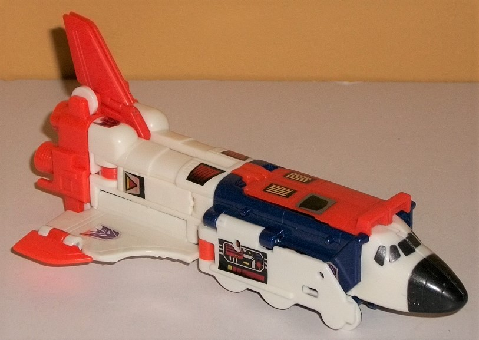
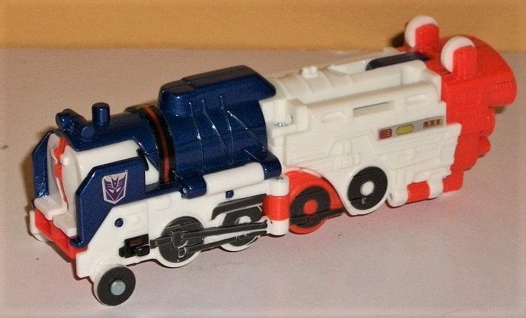
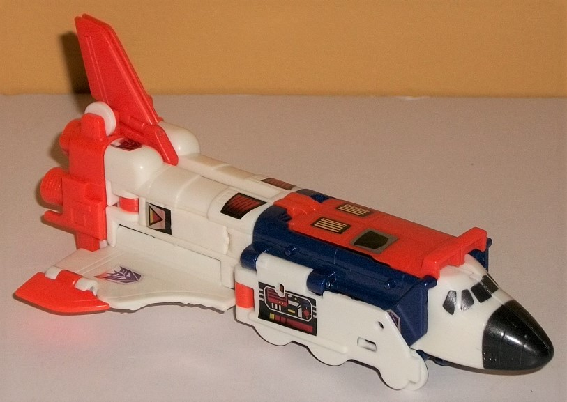
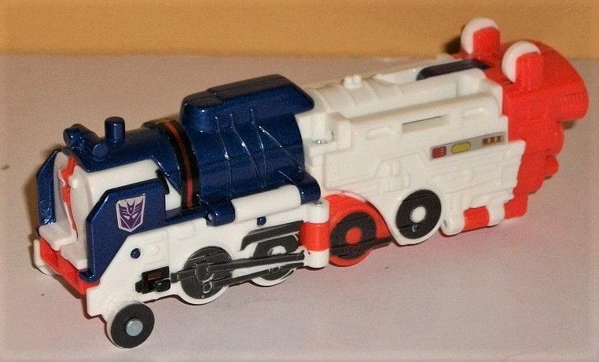

 
Difficulty of Transformations : Easy
Color Scheme : White, milky orange, dark metallic bluish purple, and some metallic gunmetal gray, metallic black, and moderately light blue
Individual Rating: 6.7
Set Price
: $60 (U.S.)
Allegiances
: Decepticon
Overall Rating
: 6.5
 Astrotrain
Astrotrain


Difficulty of Transformations
: Easy
Color Scheme
: White, milky orange,
dark metallic bluish purple, and some metallic gunmetal gray, metallic
black, and moderately light blue
Individual Rating:
6.7
(NOTE: Because this is a repaint, this is not a full-blown review. This mainly covers any changes made to the mold and the color scheme, and merely compares it to the original G1 reissue Astrotrain. For a review on the mold itself, read the review of the original G1 reissue Astrotrain here .)
Astrotrain's been reissued
again for this Platinum Edition release, but bizarrely, he's in completely
new colors that don't really homage anything. He still has white as a dominant
color-- particularly on the top of the robot mode, sides of the legs/alt
modes, and front of the shuttle mode-- and the diecast is still an Astrotrain-y
color, being a metallic dark purple (albeit a more bluish-tinted shade
of the color than is normally used for him). However, a milky shade of
orange plastic has been added to quite a lot of him-- the tips of his main
wings and tailfins, on his gun, the back end of his alt modes, some of
the side wheels, and the front of the legs/top of the alt mode midsection.
The orange works quite well with the white and fairly well with the purple,
so it's not like they clash, it's just kind of an odd choice. There's also
a bit of orange paint on Astrotrain's forehead, and some moderately light
blue paint on his visor, to break up the colors on his face some. Additionally,
there's gunmetal gray paint on much of the train wheel detailing on the
sides of his train mode, and metallic black on his shuttle windows and
nosecone. To help break up some of his other pieces, though-- particularly
in robot mode-- there's some stickers, which are largely different than
on his original reissue. He still has the Decepticon "rub sign" on his
lower right leg, but he now also has Decepticon symbol stickers on his
wings and on the front sides of his train mode. There's some basic stripe-detail
stickers on his lower waist and lower legs, and some multi-colored "tech-detail"
stickers on the sides of his robot mode legs and the upper back of his
wings in robot mode. There's some simple triangular-detail stickers on
his shoulders, and some striped details on his robot chest. They're all
decent stickers, but I nearly always prefer paint apps to stickers, and
that remains the case here.
No mold changes have
been made to this version of Astrotrain compared to his previous reissue.
 Blitzwing
Blitzwing
Difficulty of Transformations
: Easy
Color Scheme
: Dark tan, dark dull
semi-metallic cherry red, and some silver and metallic bronze
Individual Rating
: 6.2
Blitzwing's first alternate
mode is a tank, and it's a pretty solid one at that. The proportions are
pretty spot-on, though there are a couple of extras poking out. The most
obvious is the backwards jet cockpit sticking from between the tread sections
on the front end. I mean, it's pretty blatantly just THERE, and definitely
is the primary weakness of this mode. On a (much) lesser note, you can
also see the jet blaster detail stickers on the back end, which don't make
sense on a tank, of course. Blitzwing's treads are pretty detailed for
a G1 toy, with little wheels and tread "teeth" molded in the sides-- however,
it should be noted he doesn't actually roll on the treads. There's little
wheels on the underside; the treads are just details on the sides of panels,
with actually a thin stripe of visible plastic paneling below said detailing,
which can partially ruin the illusion. The turret on the top of the mode
is pretty strong, with some simple hatch and mechanical detailing molded
in as well, and it can rotate 360 degrees. The colors are pretty much all
dark tan in this mode, though there is some dull (yet somewhat sparkly,
making it semi-metallic) cherry red that carries over from his other modes--
just like Astrotrain, this is not a G1-accurate color scheme, basically
replacing the original toy's purple with red. It's oddly kind of an "Autobot-y"
color scheme-- too bad Shattered Glass Blitzwing got his fictional color
scheme already assigned before this toy was made, this could pass for one
with different stickers. The colors aren't bad, I just wish they were a
tad brighter and fit a Decepticon better than they do. As for paint, there's
none whatsoever in this mode that's easily visible. There are some stickers,
though-- a Decepticon symbol on the top of the turret, as well as some
simple mechanical details on the top, near the back end, and the aforementioned
jet booster details. Needless to say, this mode could use a bit more color.
To transform Blitzwing
into his second mode-- a jet-- you basically just turn the tank mode upside
down, flip the front side portions back to form the wings, and then flip
out the cockpit. (The turret slides back a bit to hide itself some, but
it's still fairly obvious because of that long barrel.) The wings are a
bit overly thick, having the tops of the tank mode on their bottom sections,
and the wings aren't nearly as long as they should be-- as such, I find
this the weaker of Blitzwing's two alt modes. However, the main body of
the jet looks pretty good, and the nosecone is pretty solid, complete with
a flip-out landing gear. To help "ease" the fact that the jet wings are
so thick, there's some hefty (non-functioning) missile launchers in there,
giving Blitzwing a good deal of firepower to dish out in this mode, given
that the turret's now just an extra on the bottom. The red color is subtantially
more prevalent in this mode, going all the way down the central body and
nosecone, as well as on the wings. There's some metallic bronze paint on
the cockpit windows as well, and several stickers. He's got some vent and
intake stickers on the middle of the body, some generic paneling stickers
on the sides of the body, some swept-back details on his tailfins, and
some rather bizarre arrow stickers on the main wings, which look kinda
odd. Why big arrows
there
? Anyways, there's also two Decepticon
symbol stickers on each side of the main body, making this mode definitely
more visually interesting than the tank mode.
Swinging the whole rear
sections of the jet forward, rotating the jet nosecone back to reveal the
robot head, flipping out the little pieces in the middle of the shoulders
and extending them out to reveal the robot arms, and then slightly lengthening
and separating the rear jet body pieces will give you Blitzwing's robot
mode. This is easily the weakest of his three modes-- it's honestly difficult
to find a part of this mode I'm completely satisfied with. I guess the
robot mode headsculpt is okay, with a bronze "helmet", a red visor, and
a normal silver mouth. I also do like the large shoulder-wings, and the
turret on his back is a nice place for it. The back body of the jet forms
a decent chest. However, just lengthening the rear sections of the jet
mode to form his legs looks a bit weak (especially when comparing how small
and thin his upper legs are compared to his lower legs). Using the tailfins
for his "feet" looks REALLY weird, and quite frankly ridiculous. The arms
also look ridiculous, as they just sorta sprout out of the middle of his
large shoulder pieces, with the lower arms sliding forward even further
out from those pieces. They don't look even remotely natural, and the fist
holes are actually turned 90-degrees inwards. He can still hold his gun
and snazzy jagged sword accessories well enough in this mode (they can't
store in either of his other modes), but it limits his ability to hold
other TFs' accessories given how relatively close his hands are together.
As for articulation, all Blitzwing can move in this mode are his arms up-and-down
at the shoulders-- that's it, but then again that's pretty typical for
a G1 Transformer.
The Decepticon Triple Changers 2-pack is an interesting concept-- reissuing two of the first triple-changing Transformer molds, but... not in their original colors. If you're a G1 toy aficionado and want the nostalgia and don't care about stuff like articulation, colors, or proportions and mostly just want some old-style TFs, this set's for you. However, if you want toys with at least semi-modern proportions/articulation or want accurate colors, you'd better pass on this set, even if it's one of the more reasonably-priced "Platinum Edition" sets.
Reviews by Beastbot